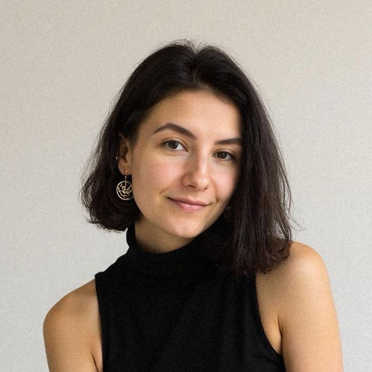
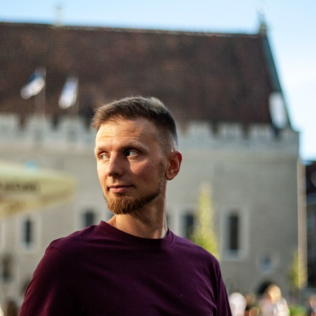

Circling · Authentic Relating
Slow Down,
Be Seen,
Connect For Real
a journey of transformation together


with Dmitrijs & Diana
Sunday, 16 August · 16:30
Üks Maja · Valdeku 66, Tallinn
In English · No experience needed